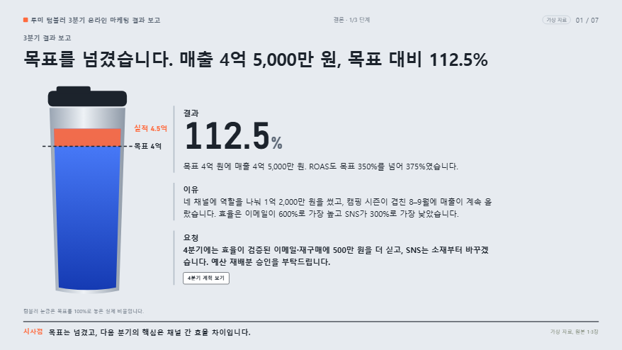

샘플 갤러리
ppt-to-html 스킬로 만든 발표입니다. 발표를 열어 화살표로 넘겨 보고, 원본 PPT와 비교해 보세요. 오른쪽 위 편집·메모 도구도 그대로 써볼 수 있습니다.
모든 샘플은 새로 만든 가상 자료입니다. 실제 회사, 병원, 성과가 아닙니다.
ppt-to-html 스킬로 만든 발표입니다. 발표를 열어 화살표로 넘겨 보고, 원본 PPT와 비교해 보세요. 오른쪽 위 편집·메모 도구도 그대로 써볼 수 있습니다.
모든 샘플은 새로 만든 가상 자료입니다. 실제 회사, 병원, 성과가 아닙니다.